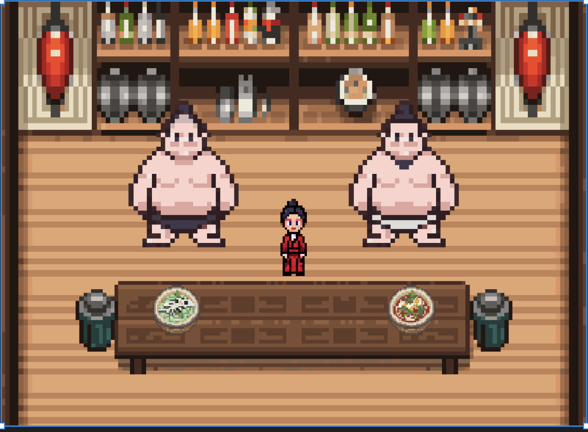
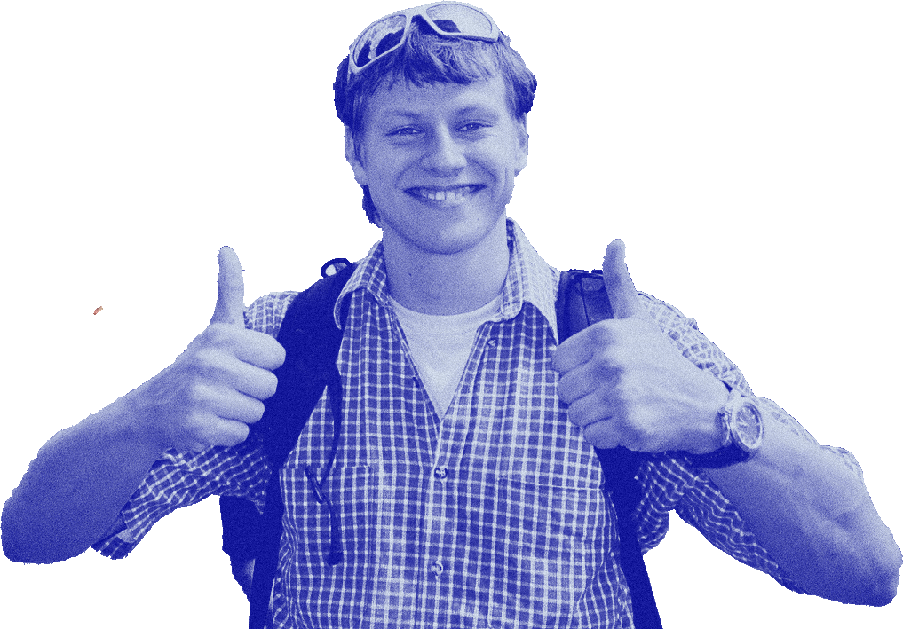
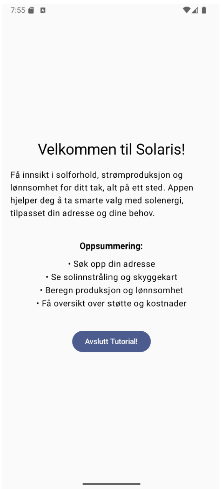
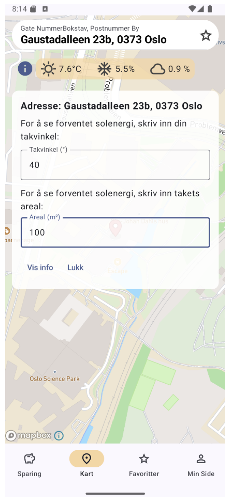
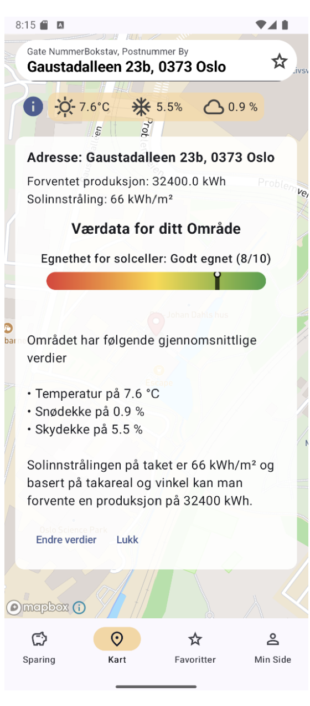
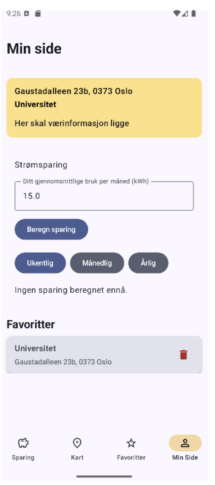
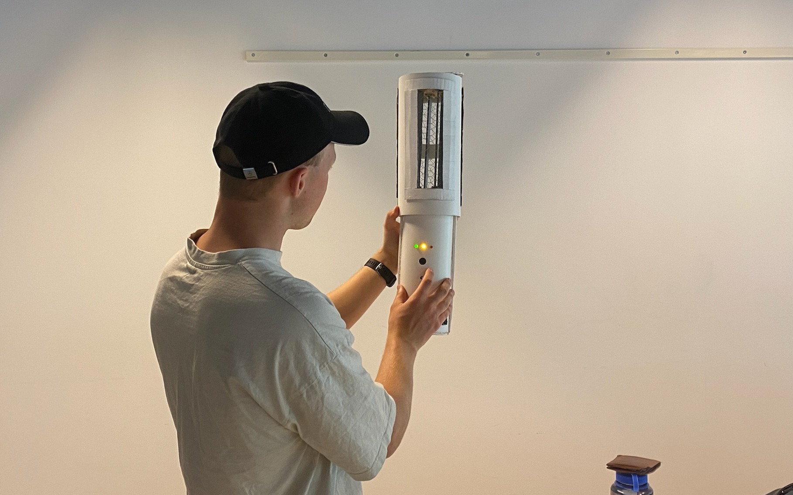
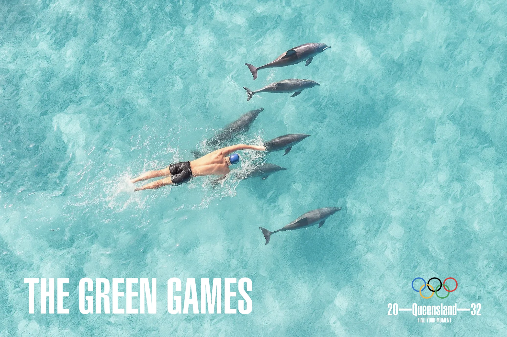

Game Jam
På en helg utviklet vi et spill fra scratch under IFI Game Jam. Spillet er programmert i Pygame, med grafikk og visuelt innhold laget for hånd i Figma.
Link til prosjekt
Hei! Jeg er Christian, en UX-designer med en bachelor-grad i Informatikk: Design, Bruk og Interaksjon ved UiO.
Her er noen av tingene jeg har laget så langt.




Jeg hadde hovedansvar for alt av visuelt design, og designprosessen som inkluderte prototyping, intervjuer og testing, i tillegg til deler av koding og branding. Appen lar brukeren søke opp adressen sin og få et estimat på solproduksjon og lønnsomhet for akkurat den boligen, basert på værdata, takvinkel og areal, visualisert på et kart med en tydelig egnethetsscore.
I prosjektet ble det benyttet en tilpasset Scrum/Kanban-modell med ukentlige statusmøter i stedet for daglige standups, og appen ble bygget med MVVM-arkitektur og API-integrasjon mot fire eksterne tjenester, med versjonskontroll i GitHub etter vanlig bransjepraksis.
Gjennom intervjuer med boligeiere fant vi ut at folk ikke manglet interesse for solceller, de manglet et sted å starte. Prosessen gikk fra rå skisser og en Crazy 8-økt, via håndtegnede wireframes, til høyoppløselige prototyper i Figma, alt testet på ekte brukere før vi skrev en linje UI-kode. Flere runder med brukertesting og geriljatesting formet konkrete designbeslutninger underveis, blant annet ble visningen av værdata endret etter at ny innsikt viste at brukerne tenkte annerledes om informasjonen enn vi hadde forventet.
Den viktigste innsikten kom fra testingen: brukerne kunne lese tallene appen viste (kWh, solinnstråling), men de kunne ikke vurdere om tallene faktisk var gode eller dårlige for dem. Derfor endte vi opp med å legge til en egen egnethetsscore fra 1 til 10, som ga brukeren et konkret svar i stedet for bare rådata å tolke selv.

Jeg hadde ansvar for interaksjonsdesign og fysisk produktutvikling. Oppgaven var å utforske temaet «av/på» gjennom et fysisk artefakt. Etter intervju og fokusgruppe med turfolk landet vi på et konkret problem: varm, tett og dårlig luft i telt på sommeren. Løsningen ble en sammenleggbar vifte som automatisk styres av en luftkvalitetssensor, eller manuelt via en spak.
Prosessen fulgte en Double Diamond-struktur, fra bredt konsept til smalt problemområde, og fra bred idéutforskning til konkret design. Vi brukte Crazy 8 og Six Thinking Hats i workshops, både med og uten brukere, og kategoriserte funn i affinity-diagrammer for å prioritere. Brukerne rangerte selv hvilke egenskaper som betydde mest (størrelse og funksjonalitet slo utseende og vekt), noe som direkte formet formkonseptet: vi forkastet et tidlig rektangulært design til fordel for en sylindrisk, kollapsbar form inspirert av en vannflaske og Braun HL 1-viften fra 1959.
Det sentrale designproblemet var interaksjon i mørket. Vi tok utgangspunkt i at brukeren skulle betjene viften halvsovende, uten lys, noe som tvang fram fysiske kontroller som kunne forstås gjennom berøring alene, uten skjerm eller tekst. Vi iterativt testet lavoppløselige prototyper (papp, papir) for å utforske rolle og form separat, før vi landet på en spak for modusvalg og dioder som visuell nedtelling. En brukbarhetstest mot slutten avdekket at hovedfunksjonene var intuitive, men at mer «skjulte» funksjoner, som å tilbakestille nedtellingen, fortsatt krevde forklaring.
Innsikten fra hele prosessen var at å designe for mørket tvinger fram spørsmål ved nesten alle antagelser man har om hvordan folk leser et grensesnitt. Med mer utviklingstid ble konseptet vurdert som levedyktig for videre utvikling og masseproduksjon, ettersom det løste et reelt og vanlig problem.
I utvekslingsoppholdet i Australia jobbet jeg med digitale brukergrensesnitt i faget Creating Screen Interfaces, med fokus på løsninger tilpasset brukernes oppgaver og behov, ikke bare visuelt tiltalende design. Vi utforsket standarder for nettsideoppsett, forskjeller mellom multi-page- og scroll-baserte løsninger, og hvordan innhold som oppskrifter kan tilpasses ulike brukssituasjoner. Faget inkluderte også eksperimentelle oppgaver der vi testet grensene for hvordan digitale medier, som tidslinjer og informasjonsflyt, kan designes og redefineres.

På en helg utviklet vi et spill fra scratch under IFI Game Jam. Spillet er programmert i Pygame, med grafikk og visuelt innhold laget for hånd i Figma.
Link til prosjekt
En utforskning av AI som designverktøy der vi utviklet en mockup reklamekampanje for de kommende olympiske lekene i Queensland, der prompting og AI-baserte genereringsverktøy stod for hele den visuelle produksjonen.
Link til prosjektPågående prosjekt der jeg utvikler en AI-basert løsning for å evaluere teknikken i backflips gjennom analyse av videoopptak og sammenligning med en referanseutførelse. Målet er å identifisere tekniske avvik og vurdere utførelseskvalitet basert på bevegelsesmønstre.